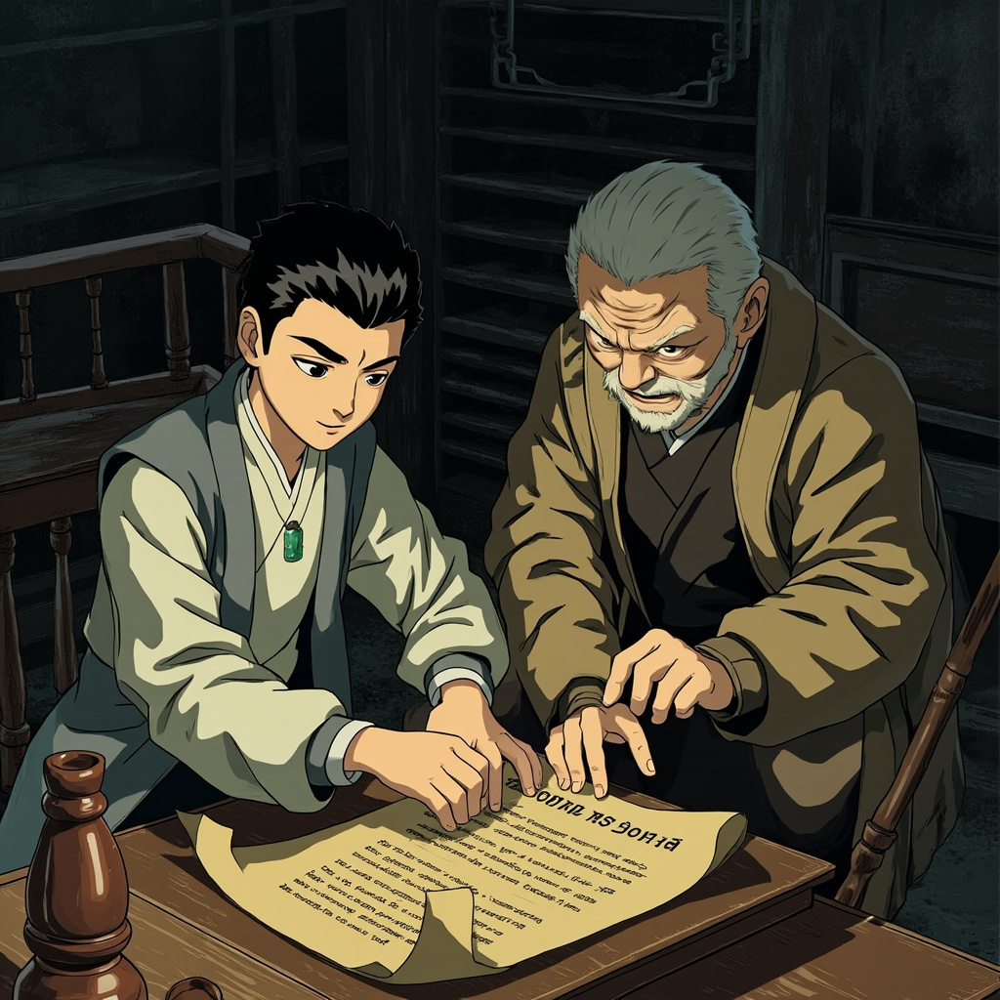
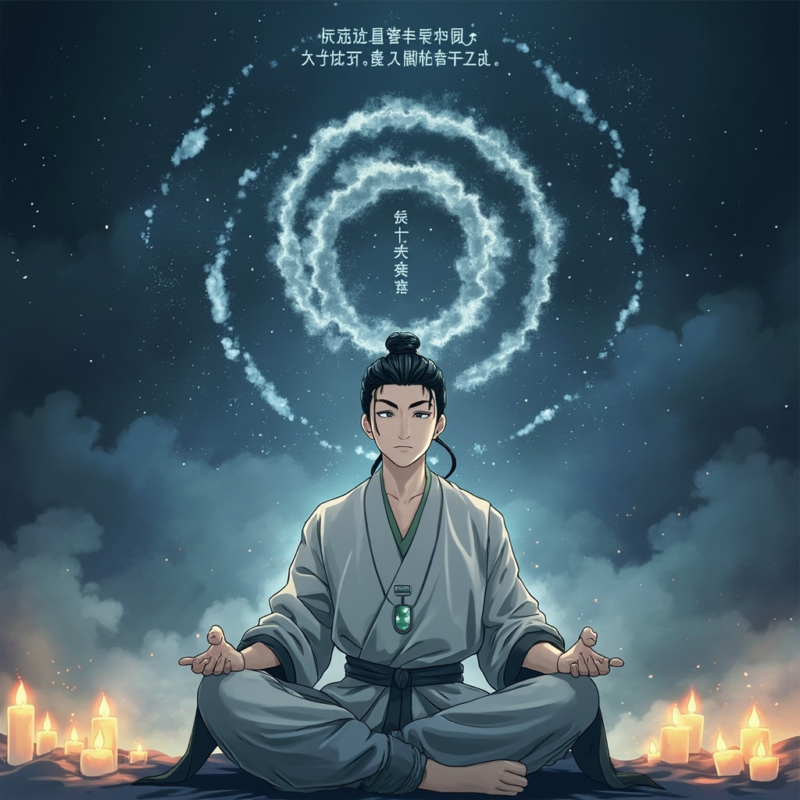
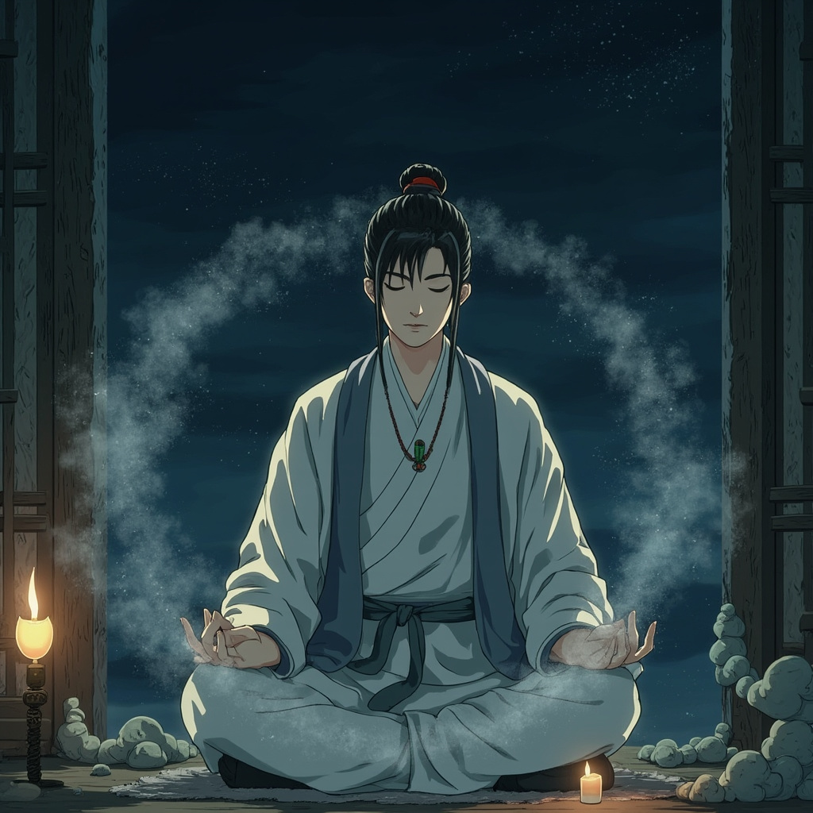
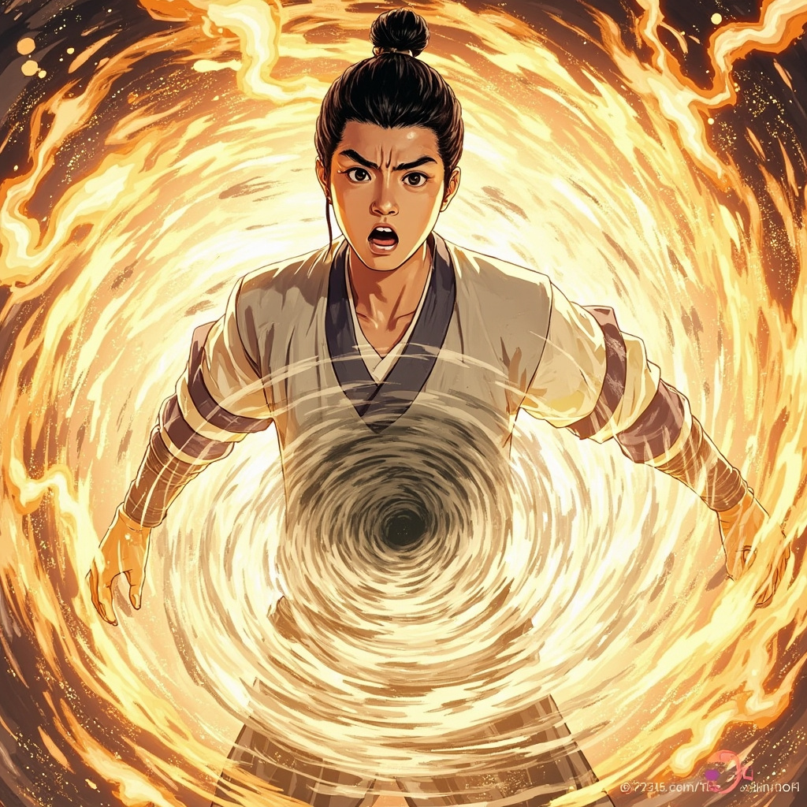
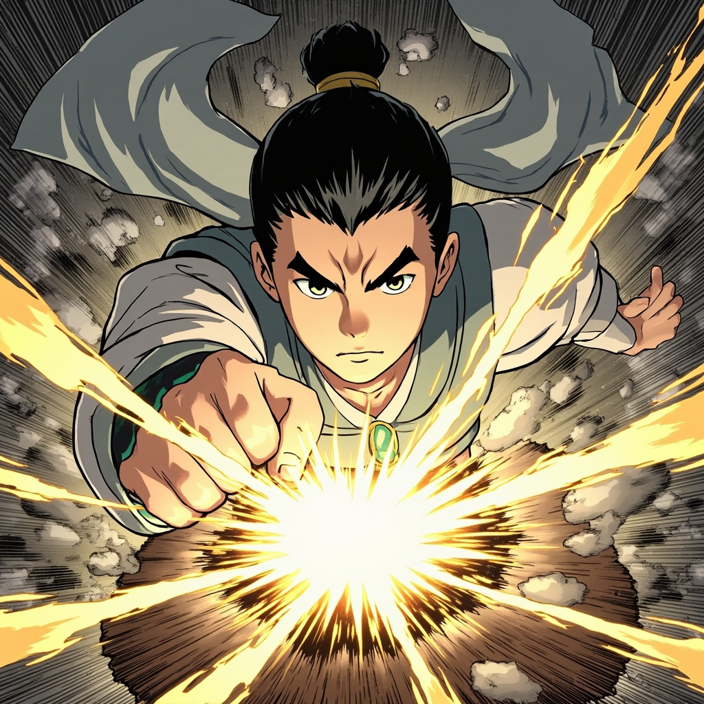

萬古塵埃 · 彩色CG漫畫版
拳腳對決持續了整整一天。
葉塵一路過關斬將，最終在旁系子弟中排名第三——
僅次於兩個主脈出身的天才少年。

「這是你父親以前練功的地方。」
福伯推開門，屋內佈置簡單——
最引人注目的是書桌上放著一本泛黃的冊子：
《塵埃決意》
「靈氣不過是塵埃的一種形態，
而塵埃本身，才是力量的本源。」
葉塵讀完這段話，感覺渾身一震——
這跟他昨晚在斷崖上感受到的認知完全一致！

第一步：感知塵埃——感受空氣中每一粒灰塵的存在
第二步：引塵入體——讓身體保持「開放」的狀態
第三步：塵埃歸源——形成修煉者的「根基」

當天晚上，葉塵關上門，拉上窗簾，
然後盤膝坐在床上，開始按照《塵埃決意》的方法進行修煉。
空氣中的灰塵開始變得清晰起來——
它們像無數微小的舞者，在房間裡隨風飄動。

丹田裡的灰色漩渦突然加速旋轉——
速度之快讓葉塵感覺自己的身體都在跟著顫動。
緊接著，一股灼熱感從丹田擴散到全身——
就像久凍的土地終於迎來了春天的陽光。
玉墜表面的裂縫又擴大了——
現在已經能清楚地看到裂縫內部透出的微弱金光。
他的手指變得更加透明，
能看到皮膚下面淡淡的灰色紋路。

「砰！」
木樁表面出現了一道裂紋。
葉塵收回手，看著那道裂紋，心裡湧起一股激動——
這才是他真正的道路。
塵埃散修的路。